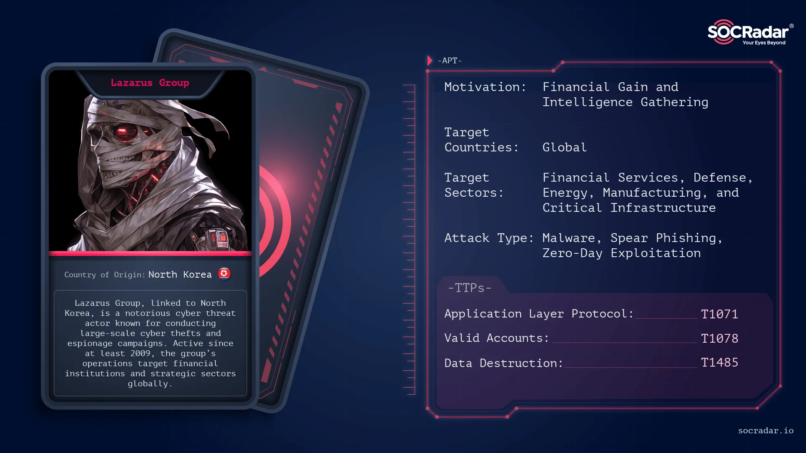
Lazarus Group is a highly sophisticated Advanced Persistent Threat (APT) group widely recognized for conducting cyber espionage, financially motivated cybercrime, and destructive cyber operations. Active since at least 2009, the group has targeted governments, financial institutions, cryptocurrency platforms, defense contractors, software vendors, healthcare organizations, and critical infrastructure across the globe.
Over the past decade, Lazarus has demonstrated exceptional technical capabilities by developing custom malware families, conducting complex supply chain compromises, exploiting zero-day vulnerabilities, and executing large-scale financial theft campaigns. Unlike many threat actors that specialize in a single objective, Lazarus conducts operations spanning espionage, sabotage, ransomware deployment, and cryptocurrency theft, making it one of the most versatile and persistent nation-state threat groups currently active.
The group's operations continue to evolve alongside advancements in cybersecurity defenses. Lazarus frequently updates its malware, command-and-control infrastructure, and operational techniques to evade detection and maintain long-term access to compromised environments.
Due to independent tracking by multiple cybersecurity vendors and government agencies, Lazarus Group is known under several aliases. Although the naming conventions differ between organizations, these aliases generally refer to the same threat actor or closely related operational clusters.
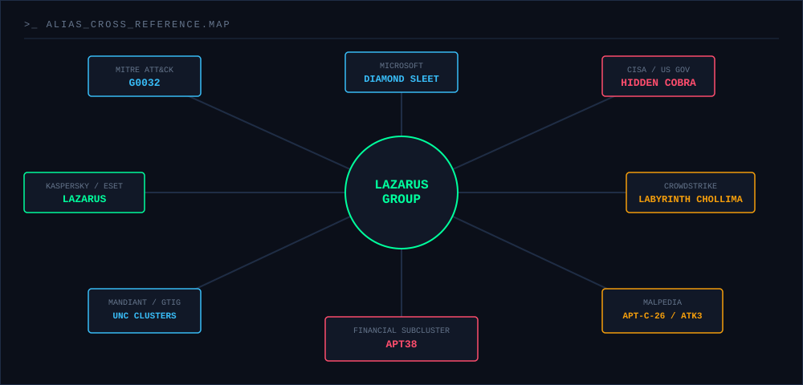
Figure: Cross-vendor alias mapping for Lazarus Group
| ORGANIZATION | ALIAS |
|---|---|
| MITRE ATT&CK | Lazarus Group (G0032) |
| Microsoft | Diamond Sleet (formerly DEV-0056 / ZINC) |
| CISA / US Government | Hidden Cobra |
| Kaspersky | Lazarus |
| ESET | Lazarus |
| CrowdStrike | Labyrinth Chollima |
| Mandiant / Google Threat Intelligence | UNC and cluster-specific designations for particular campaigns |
| Malpedia | APT38, APT-C-26, ATK117, ATK3, Alluring Pisces, Andariel, Appleworm, BeagleBoyz, Black Artemis |
Certain financially motivated operations are also tracked separately under names such as APT38, while specific operational subgroups — including Andariel and BlueNoroff — are often analyzed independently because of their specialized missions and malware toolsets.
Lazarus Group is widely attributed to the Democratic People's Republic of Korea (DPRK) and is assessed by numerous governments and cybersecurity organizations to operate in support of North Korean strategic interests. This attribution is based on years of technical analysis, intelligence reporting, and the correlation of operational behaviors across multiple campaigns.
Evidence supporting this attribution includes:
While attribution in cyberspace is inherently challenging, the collective body of technical and intelligence evidence provides a high level of confidence that Lazarus operates as a North Korean state-sponsored threat actor.
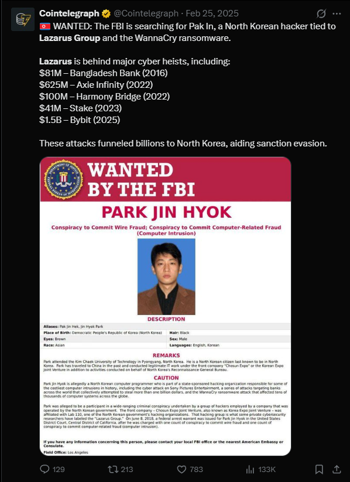
The FBI formally indicted Park Jin Hyok, a North Korean operative linked to Lazarus Group, for conspiracy to commit wire fraud and computer-related fraud. The indictment attributes his involvement to several high-profile cyber operations, including the Sony Pictures attack, the WannaCry ransomware outbreak, and multiple cryptocurrency theft campaigns.
Publicly attributed financial operations include the $81M Bangladesh Bank heist, $625M Axie Infinity compromise, $100M Harmony Bridge theft, $41M Stake breach, and the $1.5B Bybit compromise, demonstrating Lazarus Group's continued focus on funding state-sponsored operations through cyber-enabled financial theft.
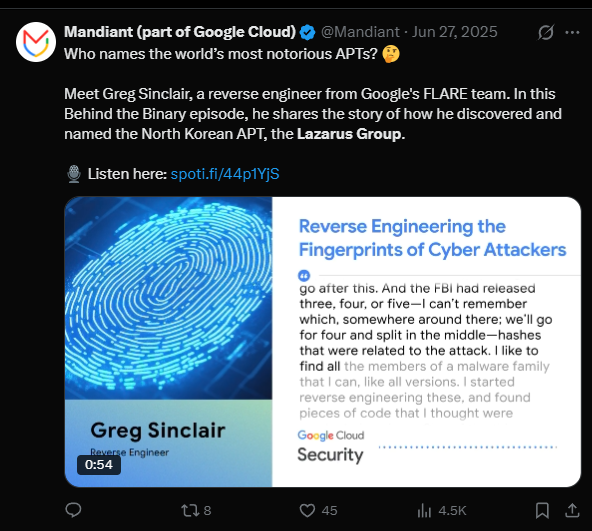
The Lazarus Group name was coined by Greg Sinclair, a reverse engineer from Google's FLARE team. While reverse engineering malware samples tied to a series of attacks, Sinclair found shared code and fingerprints across seemingly unrelated incidents, linking them to a single North Korean threat actor. His work established the forensic foundation for what is now recognized as one of the most active nation-state APTs in the world.
The operational history of Lazarus Group illustrates a gradual evolution from regional cyber espionage campaigns to globally significant cyber operations targeting governments, financial institutions, and cryptocurrency ecosystems.
| YEAR | ACTIVITY |
|---|---|
| 2009–2013 | Early cyber espionage and disruptive operations primarily targeting South Korean government agencies, media organizations, and financial institutions. |
| 2014 | Conducted the destructive cyberattack against Sony Pictures Entertainment, gaining worldwide attention. |
| 2015 | Expanded malware development and reconnaissance operations targeting defense contractors and government organizations. |
| 2016 | Attempted the Bangladesh Bank SWIFT heist, seeking to steal nearly one billion US dollars through fraudulent international transactions. |
| 2017 | Linked to the global WannaCry ransomware outbreak that impacted hundreds of thousands of systems across more than 150 countries. |
| 2018–2020 | Increased focus on cryptocurrency exchanges, digital asset platforms, and blockchain companies through campaigns such as AppleJeus and APT38 operations. |
| 2021–2022 | Continued targeting cryptocurrency organizations, software developers, and defense industries while introducing new malware variants and advanced social engineering techniques. |
| 2023–Present | Conducted sophisticated supply chain attacks, software compromises, and financially motivated operations targeting cryptocurrency companies and enterprise software vendors. |
This progression demonstrates Lazarus Group's ability to rapidly adapt its objectives and technical capabilities in response to evolving geopolitical priorities and emerging technologies.
Lazarus Group conducts cyber operations that support multiple strategic objectives rather than focusing on a single mission. Its activities generally fall into three primary categories: cyber espionage, financial theft, and disruptive operations.
Financially motivated campaigns have become increasingly prominent in recent years, with the group targeting banks, cryptocurrency exchanges, decentralized finance (DeFi) platforms, and blockchain organizations to generate revenue. These operations are widely believed to support North Korea's efforts to obtain foreign currency despite international economic sanctions.
In parallel, Lazarus continues to conduct intelligence-gathering operations against government agencies, military organizations, defense contractors, research institutions, and technology companies. These campaigns are designed to collect sensitive information, support strategic decision-making, and maintain long-term access to targeted networks.
The group has also demonstrated the capability to conduct destructive cyberattacks, deploy ransomware, compromise software supply chains, and execute complex social engineering campaigns. This diverse operational portfolio distinguishes Lazarus from many other threat actors and reflects a mature organization capable of adapting its techniques to achieve a wide range of strategic objectives.
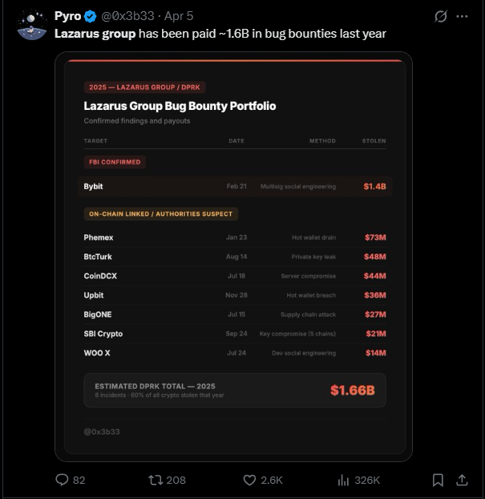
In 2025 alone, Lazarus Group was responsible for an estimated $1.66 billion in confirmed or suspected cryptocurrency theft — accounting for approximately 60% of all crypto stolen globally that year. Major incidents include the Bybit multisig social engineering attack ($1.4B, FBI confirmed), Phemex hot wallet drain ($73M), BtcTurk private key leak ($48M), CoinDCX server compromise ($44M), and several others. This scale of financially motivated activity underscores the group's central role in funding North Korean state operations.
Lazarus Group has conducted numerous cyber operations spanning financial theft, cyber espionage, ransomware, and supply chain compromises. Over the years, the group's campaigns have evolved from primarily targeting government organizations in East Asia to conducting global operations against financial institutions, cryptocurrency exchanges, software vendors, and technology companies. The following summarizes the most significant publicly reported campaigns attributed to Lazarus Group, beginning with the most recent.
In February 2025, Lazarus Group was attributed to the compromise of the cryptocurrency exchange Bybit, resulting in the theft of approximately 1.5 billion USD in Ethereum-related assets. The incident is regarded as the largest cryptocurrency theft publicly reported to date.
Investigations indicated that the attackers compromised elements of the transaction-signing workflow associated with third-party wallet infrastructure, enabling fraudulent transactions to be approved while appearing legitimate. Following the theft, the stolen assets were rapidly moved through multiple wallets and laundering services to hinder recovery efforts.
Objectives: Cryptocurrency theft · Supply chain compromise · Financial gain · Cryptocurrency laundering
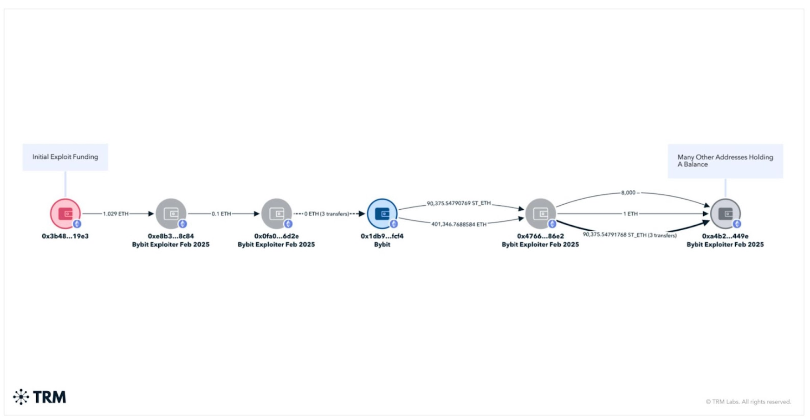
Figure: On-chain tracing of stolen Bybit funds moving through exploiter wallets (TRM Labs)
The Lazarus Group's financial campaigns continued beyond Bybit, with the group reportedly breaching Bitrefill, draining hot wallets and compromising information belonging to approximately 18,500 customers. The operation is consistent with Lazarus's pattern of targeting cryptocurrency infrastructure through insider-aware attack methods. The same FBI WANTED poster for Park Jin Hyok was displayed at a press conference announcing related indictments.
Lazarus Group expanded its software supply chain operations by publishing malicious packages to popular open-source ecosystems such as npm and PyPI. These packages impersonated legitimate libraries or were distributed through malicious GitHub repositories targeting developers.
The malware primarily targeted developers working on cryptocurrency, blockchain, and Web3 projects. Once installed, the packages deployed backdoors, harvested credentials, and established persistent access to developer workstations.
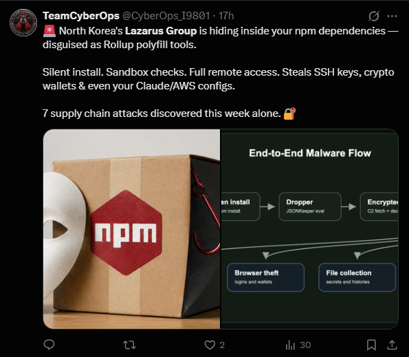
Researchers identified Lazarus Group hiding inside npm dependencies disguised as Rollup polyfill tools. Once silently installed, the malicious packages perform sandbox checks, establish full remote access, and steal SSH keys, cryptocurrency wallets, and cloud config files (Claude/AWS configs). The end-to-end flow: silent install → dropper (JSONKeeper eval) → encrypted C2 fetch/decode → browser theft (logins & wallets) → file collection (secrets and histories). Seven supply chain attacks of this type were discovered in a single week.
Objectives: Supply chain compromise · Developer workstation compromise · Credential theft · Initial access to enterprise networks
The Contagious Interview campaign targets software developers, cybersecurity professionals, and cryptocurrency employees using fake recruiter profiles on platforms including LinkedIn, Telegram, and X.
Victims are invited to complete coding challenges or technical interviews using malicious projects hosted on GitHub or other code-sharing platforms. Executing the supplied projects installs malware capable of stealing credentials, collecting sensitive information, and providing remote access to compromised systems.
Objectives: Social engineering · Initial access · Credential theft · Compromise of software developers
Figure: Fake recruiter profile ("Onder Kayabasi") advertising blockchain developer roles on X, used to lure victims into the Contagious Interview campaign
A 2025 Lazarus campaign targeted macOS users through a trojanized video conferencing application update. The malware kit, dubbed PyLangGhostRAT, is a Python-based remote access trojan — a port of the original Go-based GhostRAT — distributed via ClickFix-style social engineering that tricks users into approving a fake "Update Completed" installation dialog.
Once installed, the malware establishes persistent remote access, enabling credential theft, file collection, and long-term surveillance of macOS workstations. The campaign marks a continued expansion of Lazarus's targeting beyond Windows environments.
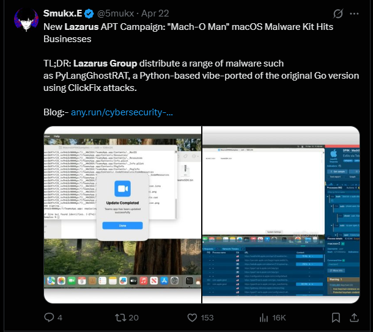
Researchers reported a new Lazarus APT campaign: "Mach-O Man" distributing PyLangGhostRAT, a Python-based vibe-ported version of the original Go-based RAT using ClickFix attacks. The malware disguises itself as a Teams application update on macOS, then establishes a full C2 channel visible in the Any.run sandbox analysis. The campaign targets macOS business users and represents Lazarus's active investment in cross-platform malware development.
Objectives: Remote access · Credential theft · Surveillance · macOS platform expansion
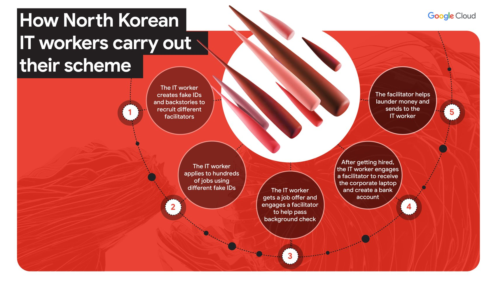
Figure: How North Korean IT workers carry out the fake-employment scheme (Google Cloud)
Lazarus Group has also been linked to campaigns in which North Korean operatives pose as remote software engineers seeking employment with international technology companies. After obtaining legitimate employment, they gain trusted access to corporate environments where they can steal intellectual property, deploy malware, or generate revenue for the North Korean regime.
Unlike traditional cyberattacks, this operation combines identity fraud, insider access, and cyber intrusion techniques, making it particularly difficult to detect.
Objectives: Insider access · Intellectual property theft · Financial gain · Long-term enterprise access
In July 2024, the Indian cryptocurrency exchange WazirX suffered a security breach that resulted in the theft of approximately 235 million USD in digital assets. Public blockchain investigations linked the operation to Lazarus Group.
The attackers compromised wallet infrastructure before laundering the stolen cryptocurrency through multiple blockchain transactions and cryptocurrency mixing services.
Objectives: Cryptocurrency theft · Financial gain · Cryptocurrency laundering
Figure: WazirX security breach coverage following the 2024 exchange compromise
The compromise of the 3CX Desktop Application represented one of Lazarus Group's most sophisticated software supply chain attacks. By infiltrating the software development process, the attackers distributed digitally signed malicious updates to thousands of organizations worldwide. The campaign demonstrated Lazarus's ability to abuse trusted software distribution channels to obtain initial access into downstream enterprise environments. This campaign is analyzed in full technical detail in the sections below.
Objectives: Supply chain compromise · Malware distribution · Intelligence collection · Long-term persistence
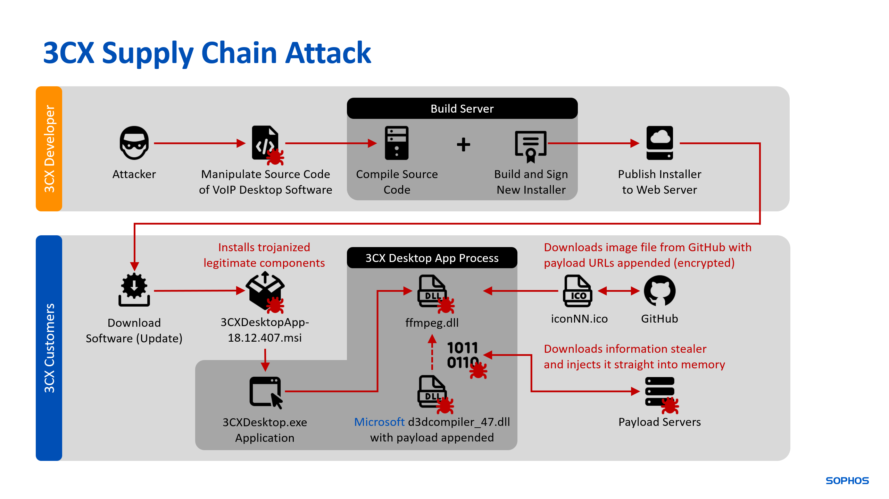
Figure: End-to-end 3CX supply chain attack flow, from build server compromise to in-memory payload delivery (Sophos)
Operation AppleJeus targeted cryptocurrency users through trojanized cryptocurrency trading applications masquerading as legitimate investment software. Victims who installed these applications unknowingly deployed malware capable of collecting sensitive information, maintaining persistence, and stealing cryptocurrency assets from infected systems.
Objectives: Cryptocurrency theft · Credential harvesting · Remote access · Financial gain
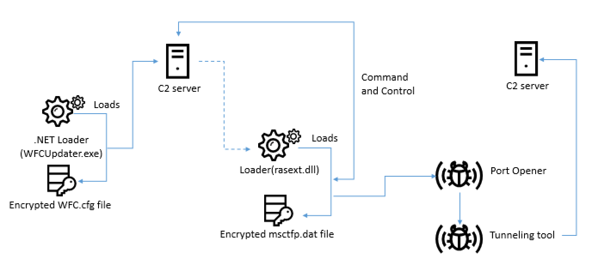
Figure: AppleJeus loader and C2 architecture — encrypted config files loaded by a .NET loader, with a port opener and tunneling tool enabling remote command and control
The WannaCry ransomware outbreak spread rapidly across more than 150 countries by exploiting the EternalBlue (MS17-010) SMB vulnerability. The malware encrypted victim systems and demanded cryptocurrency payments for decryption. Although the financial return was relatively modest, the attack caused widespread disruption to hospitals, government agencies, educational institutions, and private organizations around the world.
Objectives: Ransomware deployment · Rapid worm propagation · Operational disruption
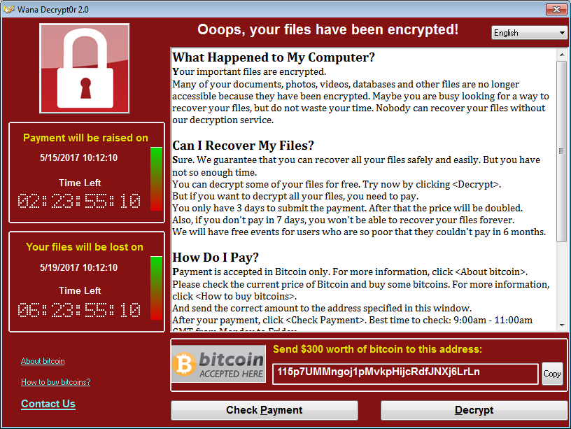
Figure: The WannaCry "Wana Decrypt0r 2.0" ransom note displayed on infected systems
Lazarus Group compromised Bangladesh Bank's internal network and abused the SWIFT banking system to initiate fraudulent international money transfers totaling nearly one billion US dollars. Although most transactions were blocked, approximately 81 million USD was successfully transferred before the fraud was detected, making it one of the most significant cyber-enabled financial thefts ever recorded.
Objectives: Financial theft · SWIFT fraud · Banking infrastructure compromise
Figure: The 2016 Bangladesh Bank heist abused the SWIFT interbank messaging system to move stolen funds
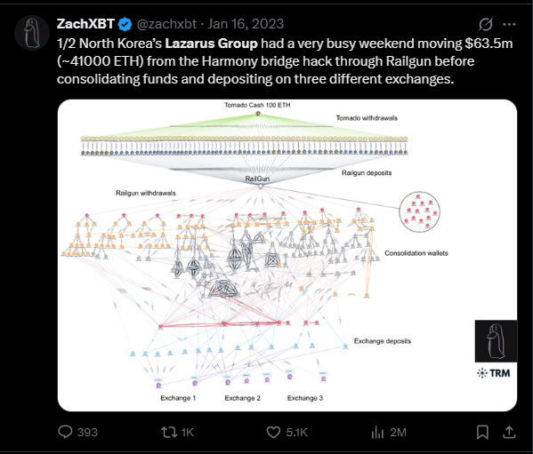
Blockchain investigator ZachXBT documented Lazarus Group moving approximately $63.5M (~41,000 ETH) from the Harmony bridge hack through the Railgun privacy protocol before consolidating funds into three separate exchanges. The on-chain analysis revealed a complex multi-hop laundering pattern: Tornado Cash withdrawals → Railgun deposits → Railgun withdrawals → consolidation wallets → exchange deposits across three separate exchanges. This visualization illustrates the group's sophisticated cryptocurrency laundering infrastructure and tradecraft.
The cyberattack against Sony Pictures Entertainment marked one of the first operations to bring Lazarus Group to international attention. The attackers stole confidential corporate data, leaked internal communications, and deployed destructive malware that permanently damaged thousands of systems. The campaign demonstrated Lazarus Group's ability to conduct long-term network intrusions followed by coordinated destructive attacks against enterprise environments.
Objectives: Data theft · Corporate disruption · Destructive malware deployment · Psychological impact
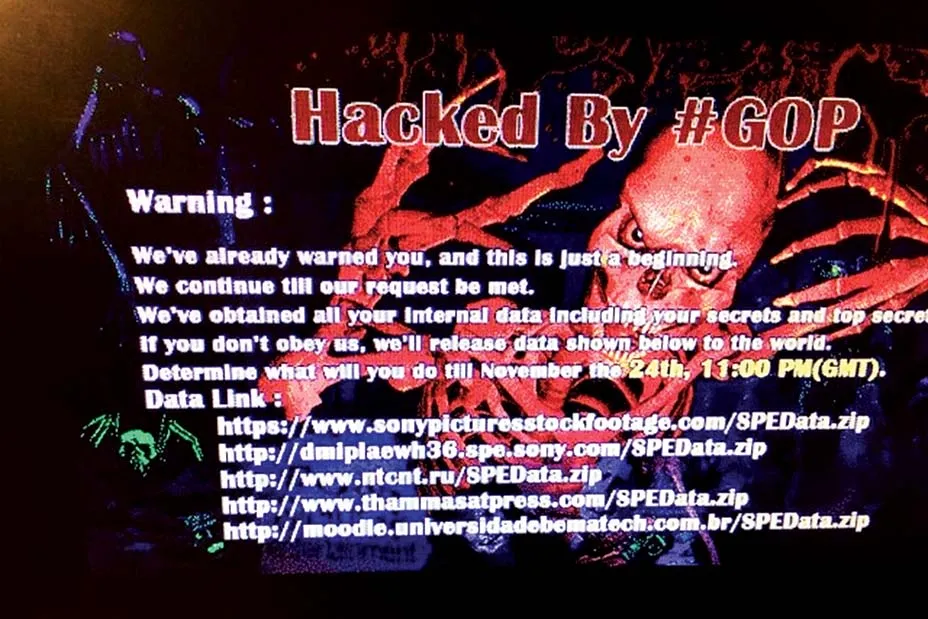
Figure: The "Hacked By #GOP" message displayed on compromised Sony Pictures workstations during the 2014 attack
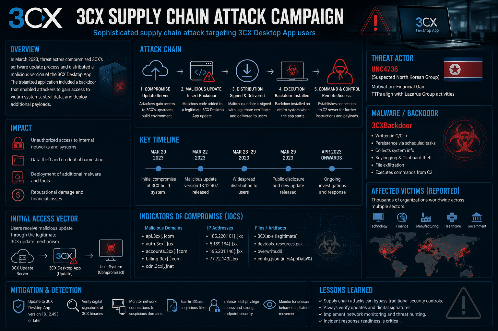
The 3CX Supply Chain Attack, publicly disclosed in March 2023, is regarded as one of the most sophisticated software supply chain compromises attributed to the Lazarus Group. Unlike traditional attacks that directly target victims, this operation focused on compromising a trusted software vendor and using its software distribution infrastructure to deliver malware to thousands of organizations worldwide.
3CX is a software company that develops Voice over Internet Protocol (VoIP) communication solutions used by more than 600,000 organizations worldwide. Its desktop application is available for both Windows and macOS and is digitally signed to ensure authenticity and integrity. Because of its widespread adoption in enterprise environments, compromising the 3CX software supply chain provided the attackers with access to a large number of potential victims through a single trusted distribution channel.
The attack did not begin at 3CX. According to the joint investigation conducted by Mandiant and 3CX, the attackers first compromised a 3CX employee's workstation through an earlier supply chain attack involving the X_TRADER financial trading software developed by Trading Technologies International, Inc.
Years before the 3CX incident, Lazarus had compromised the X_TRADER software distribution process, embedding malware within legitimate software updates. A 3CX employee installed the compromised application, unknowingly infecting their workstation. The malware established persistence, collected credentials, and allowed the attackers to maintain long-term access to the employee's system.
After obtaining access to the employee's workstation, the attackers performed internal reconnaissance and harvested credentials that enabled them to move laterally within the corporate network. Eventually, they compromised the 3CX Continuous Integration and Continuous Delivery (CI/CD) build environment.
The CI/CD infrastructure is responsible for automatically compiling, testing, digitally signing, and publishing official software releases. By compromising this environment, the attackers gained the ability to modify legitimate application components before they were digitally signed and distributed to customers. Rather than stealing the company's code-signing certificate, the attackers inserted malicious components directly into the official build process, allowing the compromised software to retain its trusted digital signature.
The attackers modified the Windows and macOS versions of the 3CX Desktop Application by replacing legitimate Dynamic Link Libraries (DLLs) with trojanized versions. When users installed or updated the software, the malicious DLLs were executed alongside legitimate application components without raising immediate suspicion. Because the software remained digitally signed by 3CX, endpoint security products and users generally trusted the application. Thousands of organizations unknowingly installed the compromised software during routine software updates.
The trojanized application initiated a carefully designed multi-stage infection chain. During execution, malicious DLLs decrypted embedded shellcode that established communication with attacker-controlled infrastructure. The malware downloaded additional payloads only after performing victim profiling, reducing the likelihood of detection. Researchers identified several malware families associated with the operation, including:
This staged architecture allowed Lazarus to limit exposure by deploying advanced malware only to organizations considered strategically valuable.
Unlike indiscriminate malware campaigns, the attackers carefully selected follow-on targets. The initial trojanized software acted as a filtering mechanism. Systems meeting predefined criteria received additional malware capable of credential theft, intelligence collection, and long-term remote access. Victims included organizations operating in sectors such as financial services, information technology, government, aerospace, and critical infrastructure.
The attack was first identified in March 2023 after security researchers observed suspicious behavior associated with the signed 3CX Desktop Application. Subsequent investigations by multiple cybersecurity vendors, including Mandiant, SentinelOne, CrowdStrike, Sophos, Elastic Security, and Kaspersky, revealed that the application had been compromised during the software build process rather than after distribution.
The investigation also uncovered the connection between the 3CX compromise and the earlier X_TRADER supply chain attack, demonstrating how Lazarus leveraged one software supply chain compromise to facilitate another.
The campaign remains one of the most significant examples of a modern software supply chain attack and illustrates the growing importance of securing software development pipelines, code-signing processes, and CI/CD infrastructure against nation-state adversaries.
| PHASE | COMPONENT | PURPOSE | ANALYSIS |
|---|---|---|---|
| 0 | Attack Execution Overview | Complete execution chain of the 3CX supply chain attack. | Attack Flow |
| 1 | X_TRADER Supply Chain | Initial compromise that led to the infection of a 3CX employee workstation. | Full Reverse Engineering |
| 2 | 3CXDesktopApp.exe | Legitimate signed application abused to initiate the malicious execution chain. | Static Analysis |
| 3 | Trojanized ffmpeg.dll | First malicious DLL loaded by the application via DLL side-loading. | Full Reverse Engineering |
| 4 | GitHub Dead Drop Resolver | Retrieves the encrypted configuration and C2 information from GitHub. | Reverse Engineering |
| 5 | VEILEDSIGNAL | Primary modular backdoor deployed during the campaign. | Full Malware Analysis |
| 6 | Campaign IOC Summary | Consolidated indicators extracted from every analyzed component. | IOC Table |
| 7 | MITRE ATT&CK Mapping | Complete mapping of the campaign to MITRE ATT&CK techniques. | ATT&CK |
Before analyzing the individual malware components, it is important to understand how they interact throughout the 3CX supply chain attack. Unlike conventional malware campaigns that rely on a single executable, the 3CX attack employed a multi-stage execution chain in which each component was responsible for loading or enabling the next stage.
The attack originated from a previously compromised X_TRADER installation, which provided the attackers with initial access to a 3CX employee's workstation. After compromising the company's CI/CD build environment, Lazarus inserted malicious components into the signed 3CX Desktop Application. When the application was executed, a sequence of malicious DLLs, shellcode, and payloads were loaded, ultimately leading to the deployment of advanced backdoors on selected victim systems.
The following sections analyze each component in the order it executes during the attack.
The first stage of the attack begins with the trojanized X_TRADER application, which served as the initial access vector into the 3CX environment. By compromising the software supply chain of X_TRADER, Lazarus Group was able to execute malicious code on a 3CX employee's workstation while the application appeared legitimate.
This initial compromise provided the attackers with a foothold inside the corporate network, allowing them to establish persistence, collect system information, and ultimately obtain access to the 3CX CI/CD build environment. The following analysis examines the malicious X_TRADER sample to identify its execution flow, capabilities, and role in the overall attack chain.
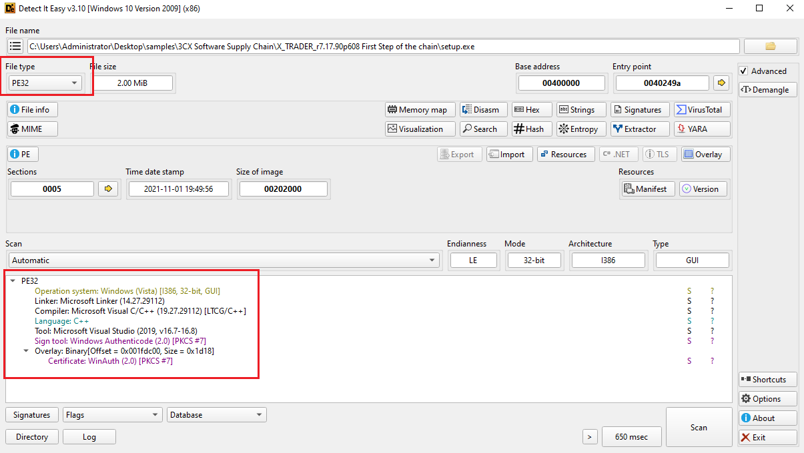
Figure 1: X_TRADER sample static properties
The analyzed sample is a 32-bit Portable Executable (PE32) designed to run on Microsoft Windows. The executable targets the x86 architecture and uses the Windows GUI subsystem, indicating that it is intended to execute as a graphical application rather than a console program.
Compiled using Microsoft VS Code, it only imports four libraries: Kernel32.dll, SHELL32.dll, ole32.dll, OLEAUT32.dll. From these libraries, some of its functionalities can be inferred:
It also has data stored in the resource section with a size of 001e1048.
Moving to IDA to confirm this functionality: uploading the sample to IDA and starting at the WinMain function, the function has only three calls. The program begins execution by calling a function that, based on its return value, decides whether to proceed to the next function or jump to the third.
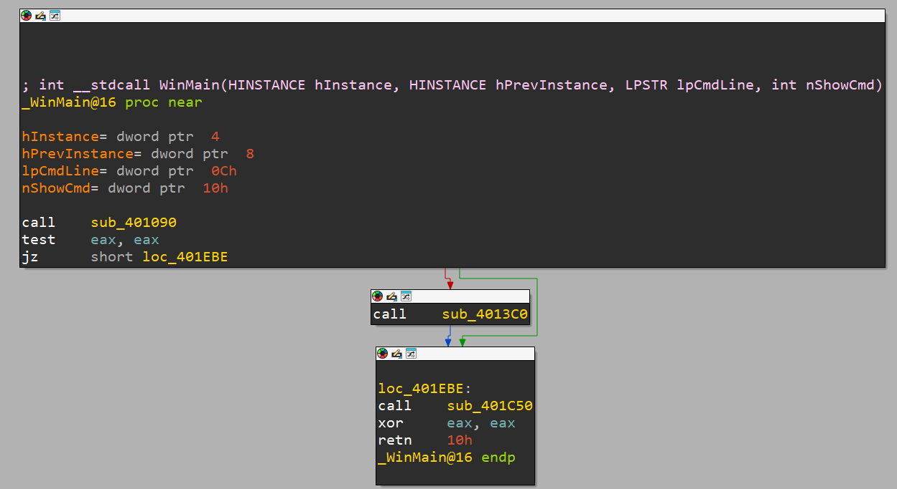
Figure 2: WinMain control flow in IDA
Entering the first function, sub_401090, the malware begins by allocating and initializing
several buffers used throughout the routine. It then retrieves the full path of the running executable and
locates the last directory separator ('\') to isolate the installation directory. Using this path, it
constructs the full path to X_TRADER-ja.mst.
Next, the malware opens X_TRADER-ja.mst, moves the file pointer to offset 0x167000,
and reads the embedded encrypted payload. It then creates a new directory named TPM under
C:\ProgramData. After creating the directory, the malware copies
immersivetpmvscmgrsvr.exe into the newly created location and renames it to
TpmVscMgrSvr.exe. Finally, it creates a new DLL named devobj.dll within the same
directory, which is later populated with the decrypted payload extracted from X_TRADER-ja.mst.
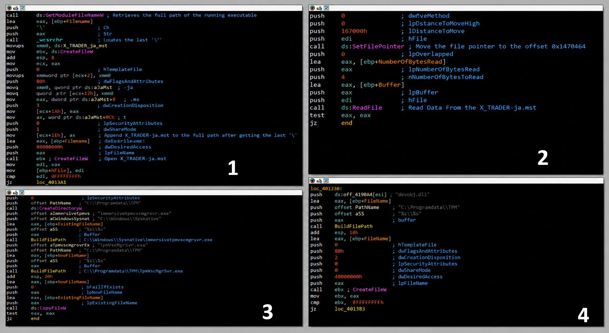
Figure 3: Payload staging under C:\ProgramData\TPM
The malware proceeds to decrypt an embedded payload from X_TRADER-ja.mst into a temporary
memory buffer. Once the decryption process is complete, the recovered payload is written to
devobj.dll, preparing it for execution in the next stage of the attack.
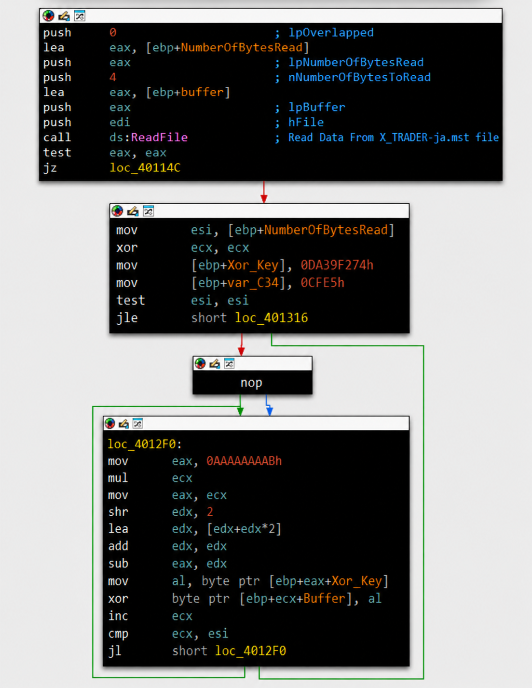
Figure 4: Payload decryption routine writing devobj.dll
At this point, the first function completes its execution, and control is transferred to the second
function, sub_4013C0. The function begins by constructing the full path
C:\ProgramData\TPM\TpmVscMgrSvr.exe. It then initializes the COM library and creates an instance
of the Task Scheduler COM object using the CLSID {0F87369F-A4E5-4CFC-BD3E-73E6154572DD}, while
requesting the ITaskService interface identified by the IID
{2FABA4C7-4DA9-4013-9697-20CC3FD40F85} through CoCreateInstance().
Since COM methods are invoked through a virtual function table (vtable), the imported interface can be reconstructed using the ITaskService method offsets shown below. This mapping allows the indirect calls observed during reverse engineering to be resolved to their corresponding COM methods.
| OFFSET | INDEX | METHOD |
|---|---|---|
| 0x00 | 0 | QueryInterface |
| 0x04 | 1 | AddRef |
| 0x08 | 2 | Release |
| 0x0C | 3 | GetTypeInfoCount |
| 0x10 | 4 | GetTypeInfo |
| 0x14 | 5 | GetIDsOfNames |
| 0x18 | 6 | Invoke |
| 0x1C | 7 | GetFolder |
| 0x20 | 8 | GetRunningTasks |
| 0x24 | 9 | NewTask |
| 0x28 | 10 | Connect |
| 0x2C | 11 | get_Connected |
| 0x30 | 12 | get_TargetServer |
| 0x34 | 13 | get_ConnectedUser |
| 0x38 | 14 | get_ConnectedDomain |
| 0x3C | 15 | get_HighestVersion |
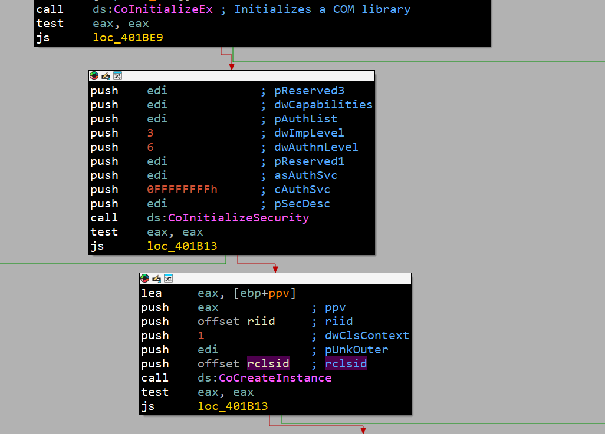
Figure 5: ITaskService COM interface acquisition
The malware initializes four empty VARIANT structures using VariantInit(). These
VARIANTs are later passed as arguments to the first method retrieved from the ITaskService COM interface.
Before the call, the compiler copies each VARIANT onto the stack, after which the malware invokes the
function located at offset 0x28 in the ITaskService vtable, corresponding to
ITaskService::Connect(). By passing empty VARIANTs, the malware connects to the local Task
Scheduler service using the current user's security context without explicitly specifying a server,
username, domain, or password.
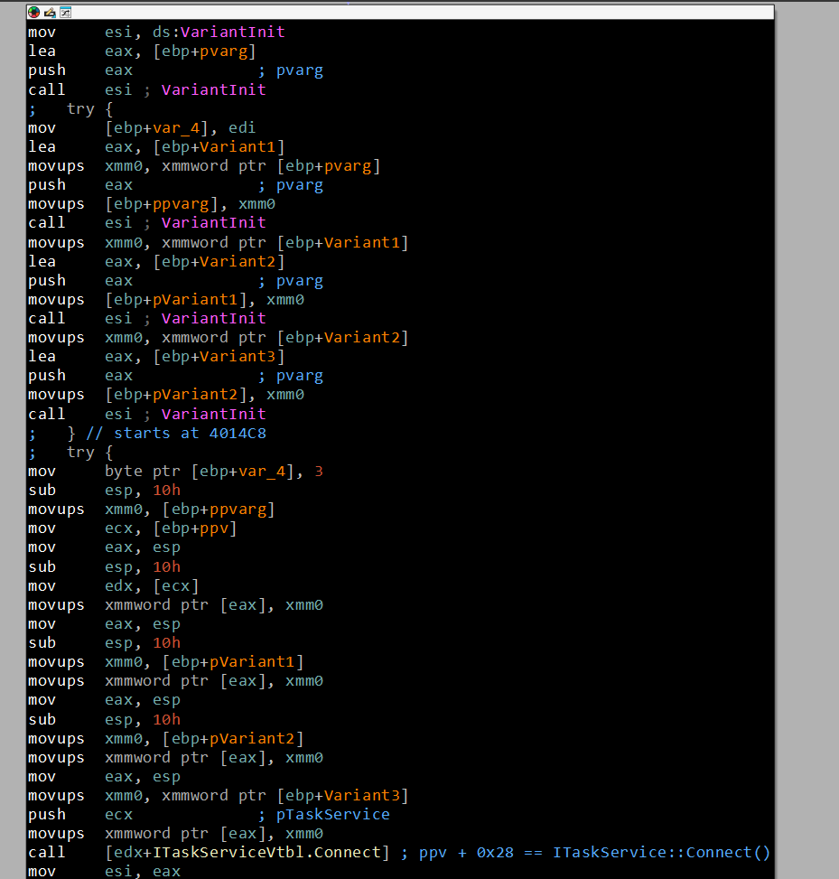
Figure 6: ITaskService::Connect() call with empty VARIANTs
The malware abuses the COM object to establish persistence by creating a scheduled task within the
\Microsoft\Windows\TPM folder. It sets the task author to "Microsoft Corporation" to imitate a
legitimate Microsoft task and configures an execution action that launches
C:\ProgramData\TPM\TpmVscMgrSvr.exe. The task also uses the identifier Tpm-VscMgr,
further reinforcing the appearance of a legitimate TPM-related scheduled task.
Task Scheduler Name: Tpm-VscMgr Author: Microsoft Corporation Action: C:\ProgramData\TPM\TpmVscMgrSvr.exe
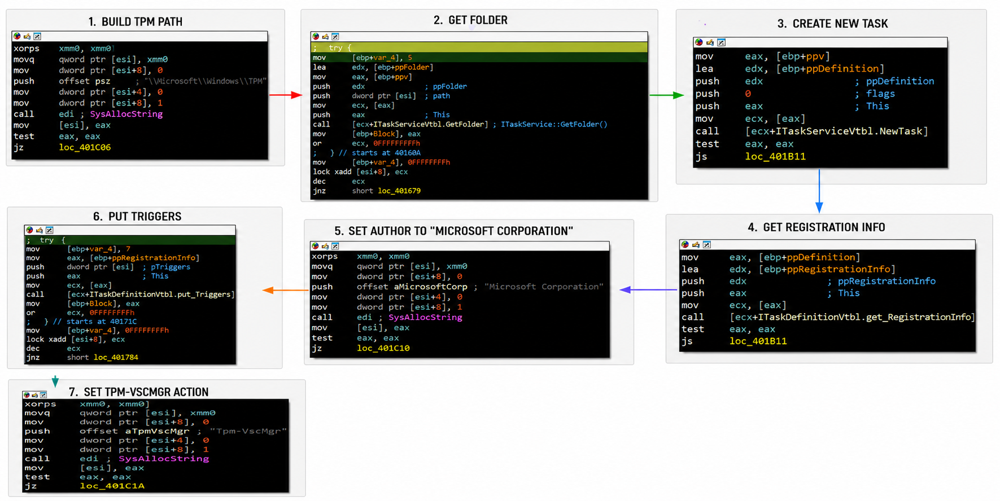
Figure 7: Scheduled task creation for persistence
Moving to the third function, the malware begins by searching the resource section for an embedded payload.
After locating the appropriate resource, it loads the encrypted data into memory. The malware then retrieves
the full path of X_TRADER.exe, opens the executable, and decrypts the embedded payload using
the XOR key 0x0DA39F274. The decrypted code is written into the target executable, effectively
patching it with the malicious payload extracted from the resource section. Once the modification is
complete, the malware executes the newly patched X_TRADER.exe and finally deletes its original
executable from disk to remove traces of the initial infection.
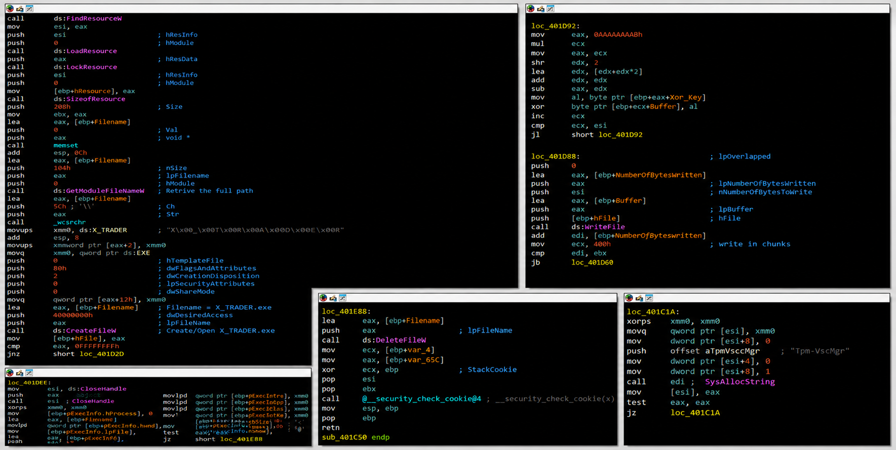
Figure 8: XOR decryption and patching of X_TRADER.exe, followed by self-deletion
Unlike the previously analyzed X_TRADER sample, 3CXDesktopApp.exe does not contain the primary
malicious functionality. Static and dynamic analysis, along with multiple public threat intelligence
reports, show that the executable remains a legitimate, digitally signed 3CX application. Its role in the
attack is to act as a trusted loader for the malicious components deployed by the attackers.
During startup, the application follows its normal initialization process and loads its required
dynamic-link libraries (DLLs). Due to the supply-chain compromise, the legitimate ffmpeg.dll included with
the application was replaced with a trojanized version. As a result, when 3CXDesktopApp.exe
starts, the Windows loader automatically loads the malicious ffmpeg.dll, transferring execution
to the attacker's code while the application continues to function normally from the user's perspective.
Therefore, the analysis of 3CXDesktopApp.exe focuses primarily on its role in initiating the
execution chain rather than implementing the malicious logic itself. The actual payload execution begins
inside the trojanized ffmpeg.dll, which is analyzed in the next phase.
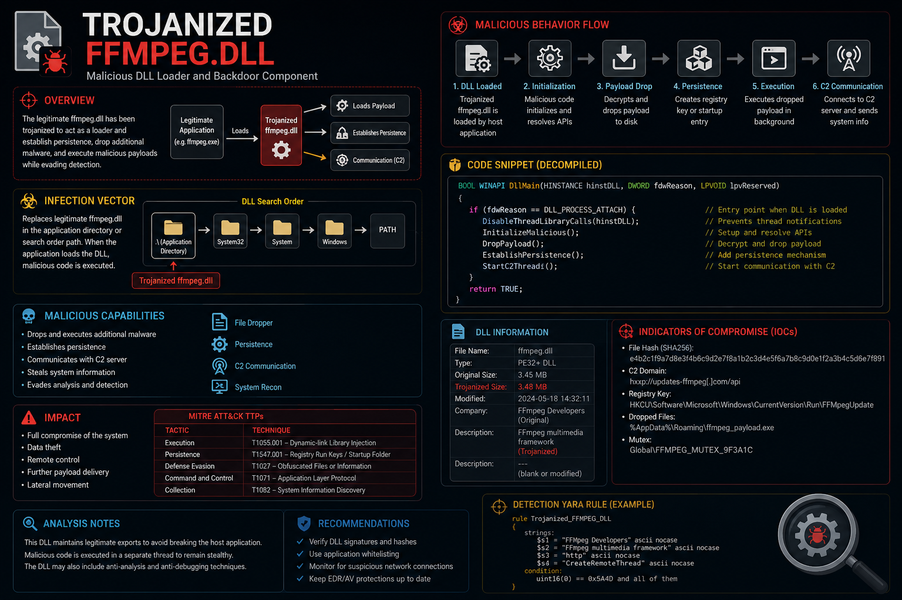
Starting the analysis of the trojanized ffmpeg.dll, the DLL was loaded into IDA for static
analysis. The entry point contains only a single function call, which immediately transfers execution to the
DLL's primary initialization routine. As a result, the remainder of the analysis focuses on this function,
where the malicious behavior is implemented.
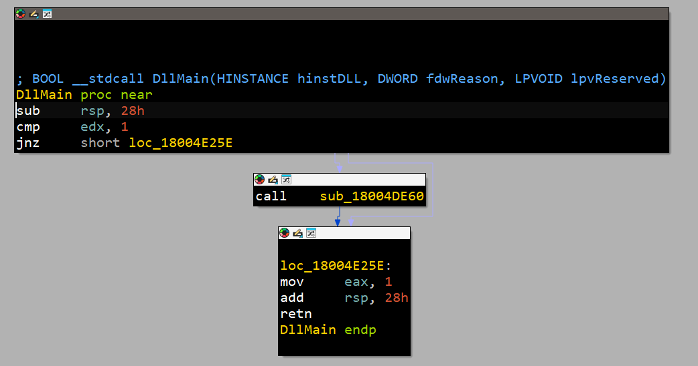
alt="ffmpeg.dll entry point transferring to initialization routine" />Figure 9: ffmpeg.dll entry point transferring to initialization routine
Going deeper into the primary initialization routine to determine the purpose of the trojanized
ffmpeg.dll, the malware begins by creating a named event called
AVMonitorRefreshEvent using CreateEventW(). Immediately afterward, it calls
GetLastError() to determine whether the event already exists. If GetLastError()
returns ERROR_ALREADY_EXISTS (0xB7), the malware concludes that another instance is already
running and terminates its execution. This mechanism acts as a single-instance check, ensuring that only one
instance of the DLL executes at a time.
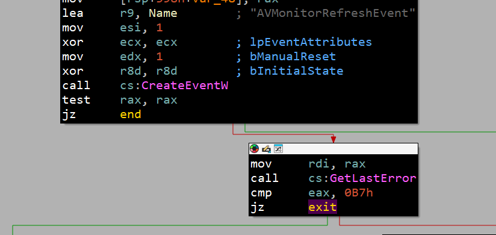
Figure 10: Single-instance check via the AVMonitorRefreshEvent named event
Moreover, the malware retrieves the full path of the running module and locates the last directory separator
('\') to obtain the application's installation directory. It then appends the string
d3dcompiler_47.dll to construct the full path to the target DLL. The file is opened using
CreateFileW() with GENERIC_READ access, OPEN_EXISTING disposition,
and FILE_ATTRIBUTE_NORMAL attributes. The malware then reads the DLL from disk into memory.
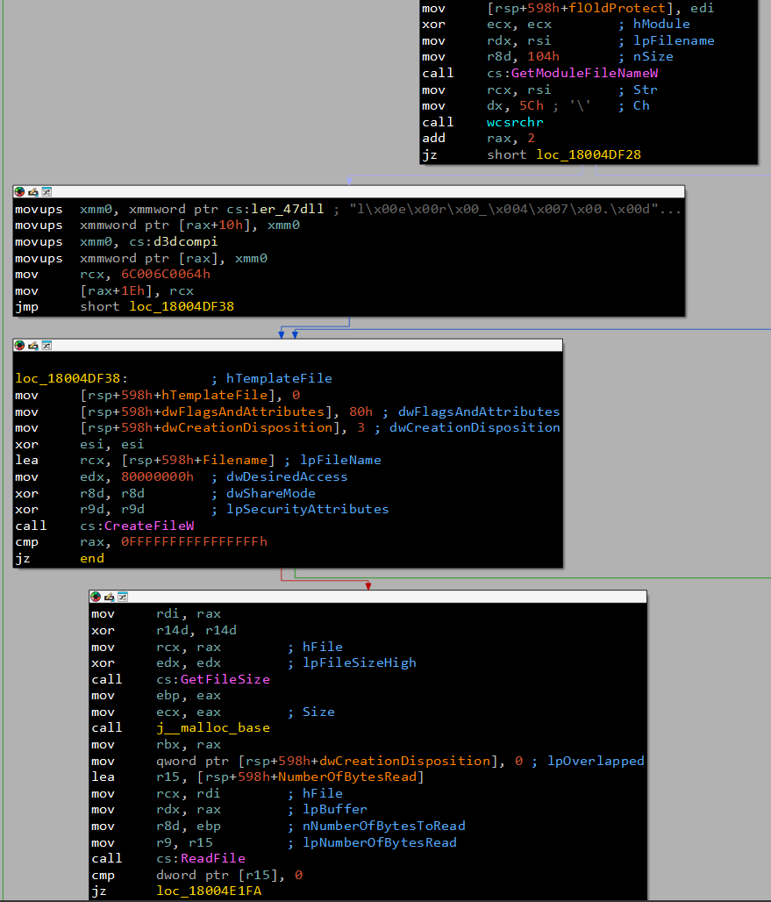
Figure 11: Reading d3dcompiler_47.dll into memory
Afterward, the malware parses the contents of d3dcompiler_47.dll in search of the byte sequence
FE ED FA CE, which serves as a marker indicating the beginning of the embedded shellcode. Once
this signature is located, the malware extracts the encrypted payload and decrypts it using the RC4 stream
cipher with the hardcoded key 3jB(2bsG#@c7. The decrypted shellcode is a downloader that
retrieves icon files from a GitHub repository at
https://raw.githubusercontent[.]com/IconStorages/images/main/, which are later used to
download the final payload.
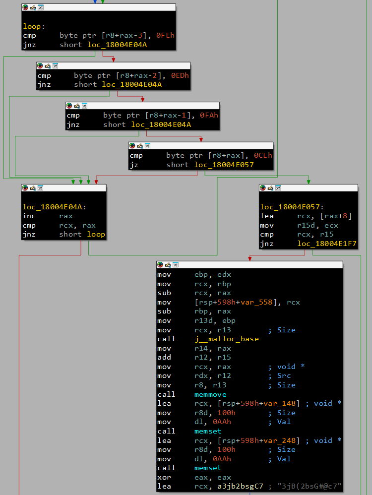
Figure 12: RC4 decryption of embedded shellcode, marked by the FE ED FA CE signature
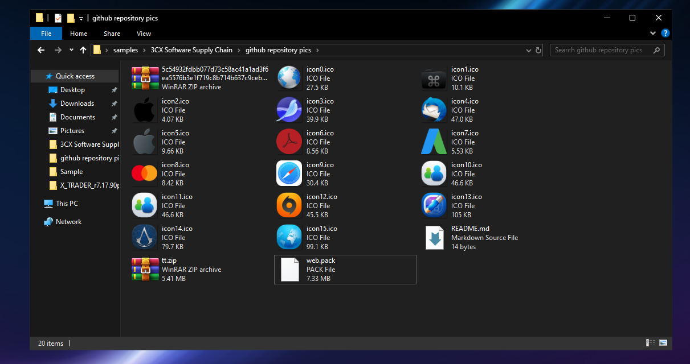
Figure 13: ICO file parsing for embedded, encoded C2 configuration
Each downloaded ICO file contains an embedded, encoded configuration rather than a standard icon resource. The malware parses the files, extracts the hidden data, and decodes it to recover the command-and-control (C2) configuration used by the final-stage payload. This technique enables the attackers to distribute updated C2 information through seemingly benign icon files hosted on remote servers.
| ICON FILE | URL |
|---|---|
| icon0.ico | https://www.3cx[.]com/blog/event-trainings/ |
| icon1.ico | https://msstorageazure[.]com/window |
| icon2.ico | https://officestoragebox[.]com/api/session |
| icon3.ico | https://visualstudiofactory[.]com/workload |
| icon4.ico | https://azuredeploystore[.]com/cloud/services |
| icon5.ico | https://msstorageboxes[.]com/office |
| icon6.ico | https://officeaddons[.]com/technologies |
| icon7.ico | https://sourceslabs[.]com/downloads |
| icon8.ico | https://zacharryblogs[.]com/feed |
| icon9.ico | https://pbxcloudeservices[.]com/phonesystem |
| icon10.ico | https://akamaitechcloudservices[.]com/v2/storage |
| icon11.ico | https://akamaitechcloudservices[.]com/v2/storage |
| icon12.ico | https://azureonlinestorage[.]com/azure/storage |
| icon13.ico | https://msedgepackageinfo[.]com/microsoft-edge |
| icon14.ico | https://glcloudservice[.]com/v1/console |
| icon15.ico | https://pbxsources[.]com/exchange |
Moving to the final phase, VEILEDSIGNAL, the malware begins by retrieving workstation network information
using the NetWkstaGetInfo() API, obtaining both the hostname and the domain name. It then loads
ntdll.dll and resolves the RtlGetVersion API to retrieve the operating system
version. Afterward, the malware obtains the path to the AppData\Roaming directory and appends
\3CXDesktopApp\config.json to construct the full path to the configuration file. The malware
then opens config.json, reads its contents into memory, and constructs a new JSON object by
appending the previously collected system information, including the hostname, domain name, operating
system version, and the data from the config.json file.
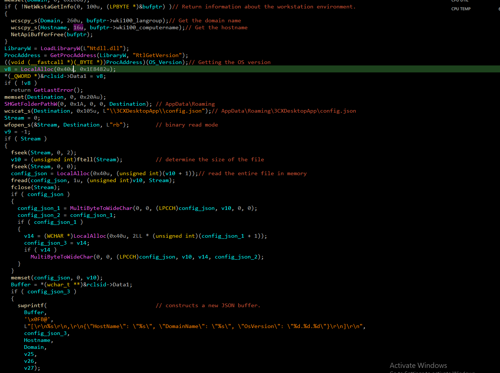
Figure 14: Collection of host information and config.json contents into a JSON buffer
The malware targets the browsing history of several Chromium- and Gecko-based web browsers, including
Google Chrome, Microsoft Edge, Brave, and Mozilla Firefox. It locates each browser's profile directory and
accesses the corresponding history database (History for Chromium-based browsers and
places.sqlite for Firefox). The malware then executes SQL queries to retrieve the 500 most
recent visited URLs and their associated page titles, appending the extracted information to the in-memory
JSON buffer for later use.
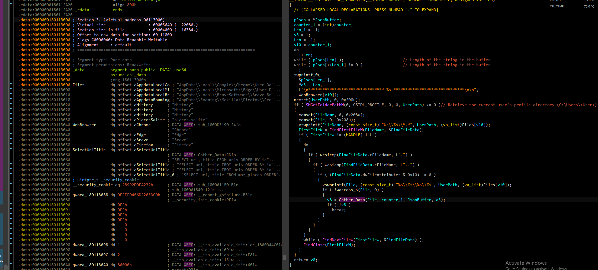
Figure 15: Browser history harvesting via SQL queries against History and places.sqlite
All indicators extracted across every analyzed component of the 3CX supply chain attack.
| TYPE | INDICATOR | DESCRIPTION | CONFIDENCE |
|---|---|---|---|
| SHA256 | DDE03348075512796241389DFEA5560C20A3D2A2EAC95C894E7BBED5E85A0ACC | 3CXDesktopApp.exe | HIGH |
| SHA256 | 7290A9AEFBB759C9B40EF8A197CF20FD098FD74DD413C4D9D81E77A31E643F49 | Trojanized ffmpeg.dll | HIGH |
| SHA256 | 11BE1803E2E307B647A8A7E02D128335C448FF741BF06BF52B332E0BBF423B03 | Trojanized d3dcompiler_47.dll | HIGH |
| SHA256 | 8AB3A5EAAF8C296080FADF56B265194681D7DA5DA7C02562953A4CB60E147423 | Final-stage payload (VEILEDSIGNAL) | HIGH |
| MD5 | 00a43d64f9b5187a1e1f922b99b09b77 | X_TRADER initial-access sample | HIGH |
| DIRECTORY | C:\ProgramData\TPM\ | Staging directory created by the first-stage malware | MEDIUM |
| FILE | C:\ProgramData\TPM\TpmVscMgrSvr.exe | Dropped executable used for persistence | MEDIUM |
| FILE | C:\ProgramData\TPM\devobj.dll | Decrypted second-stage DLL | MEDIUM |
| FILE | X_TRADER-ja.mst | Installer transform containing the encrypted payload | MEDIUM |
| FILE | %AppData%\3CXDesktopApp\config.json | Configuration file read by VEILEDSIGNAL | MEDIUM |
| TASK | Tpm-VscMgr | Scheduled task created for persistence | MEDIUM |
| EVENT | AVMonitorRefreshEvent | Named event used as a single-instance check | MEDIUM |
| KEY | RC4: 3jB(2bsG#@c7 | RC4 key used to decrypt the embedded shellcode | MEDIUM |
| KEY | XOR: 0x0DA39F274 | XOR key used by X_TRADER to decrypt the embedded DLL | MEDIUM |
| DOMAIN | raw.githubusercontent[.]com/IconStorages/images/main/ | GitHub dead-drop repository hosting encoded ICO configs | HIGH |
| DOMAIN | msstorageazure[.]com | icon1.ico dead-drop host | MEDIUM |
| DOMAIN | officestoragebox[.]com | icon2.ico dead-drop host | MEDIUM |
| DOMAIN | visualstudiofactory[.]com | icon3.ico dead-drop host | MEDIUM |
| DOMAIN | azuredeploystore[.]com | icon4.ico dead-drop host | MEDIUM |
| DOMAIN | msstorageboxes[.]com | icon5.ico dead-drop host | MEDIUM |
| DOMAIN | officeaddons[.]com | icon6.ico dead-drop host | MEDIUM |
| DOMAIN | sourceslabs[.]com | icon7.ico dead-drop host | MEDIUM |
| DOMAIN | zacharryblogs[.]com | icon8.ico dead-drop host | MEDIUM |
| DOMAIN | pbxcloudeservices[.]com | icon9.ico dead-drop host | MEDIUM |
| DOMAIN | akamaitechcloudservices[.]com | icon10 / icon11.ico dead-drop host | MEDIUM |
| DOMAIN | azureonlinestorage[.]com | icon12.ico dead-drop host | MEDIUM |
| DOMAIN | msedgepackageinfo[.]com | icon13.ico dead-drop host | MEDIUM |
| DOMAIN | glcloudservice[.]com | icon14.ico dead-drop host | MEDIUM |
| DOMAIN | pbxsources[.]com | icon15.ico dead-drop host | MEDIUM |
In addition to the network and host-based indicators above, VEILEDSIGNAL targets the following browser profile paths and databases for history collection:
| BROWSER | PROFILE PATH | DATABASE |
|---|---|---|
| Google Chrome | AppData\Local\Google\Chrome\User Data | History |
| Microsoft Edge | AppData\Local\Microsoft\Edge\User Data | History |
| Brave | AppData\Local\BraveSoftware\Brave-Browser\User Data | History |
| Mozilla Firefox | AppData\Roaming\Mozilla\Firefox\Profiles | places.sqlite |
-- Chromium-based browsers SELECT url, title FROM urls ORDER BY id DESC LIMIT 500 -- Firefox SELECT url, title FROM moz_places ORDER BY id DESC LIMIT 500
Complete mapping of the 3CX supply chain campaign to MITRE ATT&CK techniques.
| TACTIC | TECHNIQUE | ATT&CK ID | EVIDENCE |
|---|---|---|---|
| Initial Access | Compromise Software Supply Chain | T1195.002 | 3CX DesktopApp distributed with trojanized DLLs. |
| Initial Access | Trusted Relationship | T1199 | Attack leveraged the trust relationship between 3CX and its customers. |
| Execution | Shared Modules | T1129 | 3CXDesktopApp.exe loads the trojanized ffmpeg.dll. |
| Execution | User Execution: Malicious File | T1204.002 | Malware executes when the victim launches the legitimate 3CX DesktopApp. |
| Execution | Command and Scripting Interpreter | T1059 | Later-stage payloads execute downloaded commands/scripts. |
| Persistence | Scheduled Task/Job: Scheduled Task | T1053.005 | Creates the Tpm-VscMgr scheduled task. |
| Persistence | DLL Search Order Hijacking | T1574.001 | Trojanized ffmpeg.dll is loaded by the legitimate application. |
| Persistence | Event Triggered Execution | T1546 | Persistence established through Task Scheduler. |
| Privilege Escalation | DLL Search Order Hijacking | T1574.001 | Malicious DLL executes inside a trusted process. |
| Defense Evasion | Deobfuscate/Decode Files or Information | T1140 | RC4 and XOR decrypt embedded payloads and shellcode. |
| Defense Evasion | Masquerading | T1036 | Uses legitimate filenames, Microsoft task names, and trusted application components. |
| Defense Evasion | Indicator Removal on Host: File Deletion | T1070.004 | Initial dropper deletes itself after execution. |
| Defense Evasion | Hide Artifacts | T1564 | Payloads stored in legitimate-looking locations. |
| Defense Evasion | System Binary Proxy Execution | T1218 | Abuses Windows Task Scheduler COM interfaces. |
| Discovery | System Information Discovery | T1082 | Collects operating system version. |
| Discovery | System Owner/User Discovery | T1033 | Collects hostname and domain/workgroup information. |
| Discovery | File and Directory Discovery | T1083 | Enumerates browser profile directories and user files. |
| Collection | Data from Local System | T1005 | Collects browser history and configuration files. |
| Collection | Data from Information Repositories | T1213 | Reads SQLite browser history databases. |
| Collection | Archive Collected Data | T1560 | Aggregates collected information into an in-memory JSON buffer. |
| Credential Access | Credentials from Password Stores | T1555 | Later-stage payloads target browser credentials. |
| Command and Control | Application Layer Protocol: Web Protocols | T1071.001 | Uses HTTP/HTTPS for C2 communication. |
| Command and Control | Dynamic Resolution | T1568 | Retrieves encrypted configuration from remote resources. |
| Command and Control | Dead Drop Resolver | T1102.001 | Uses GitHub and remote ICO files as dead-drop resolvers. |
| Exfiltration | Exfiltration Over Web Service | T1567 | Sends collected victim information to the C2 infrastructure. |
The 3CX supply chain attack illustrates how Lazarus Group leverages a chain of trust — compromising one vendor (X_TRADER) to reach another (3CX) — to gain scalable initial access without directly touching the end victim. Because the trojanized components were inserted during the signed build process rather than after distribution, traditional signature and reputation-based trust models failed to flag the malicious DLLs.
Tpm-VscMgr scheduled task and the C:\ProgramData\TPM\ directory.